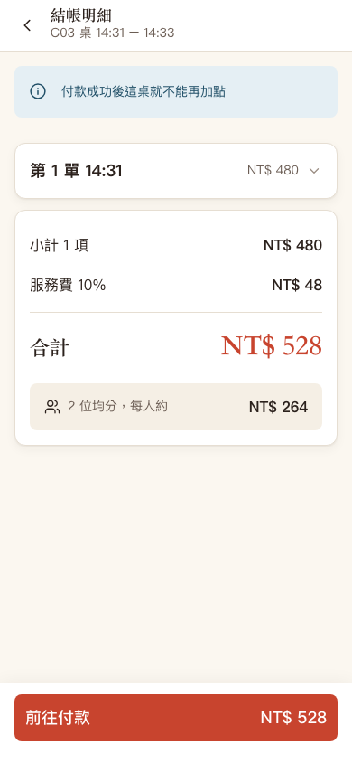

先認識這條付款路徑
- 手機先向自己的用餐場次讀取帳單，使用者確認總額。
- 伺服器再次核對金額，建立一筆「待確認」付款，再給手機前往綠界測試頁面的表單。
- 付款結果由綠界伺服器通知我們。這種系統主動通知另一個系統的方式叫回呼；客人返回商店頁面，本身不代表付款成功。
- 通知通過檢查、金額吻合，才保存成功結果、結束這次用餐、清掉未送購物車並通知同桌。
本次只驗證本機的表單產生與模擬通知；未向綠界送出表單、未進行實際扣款，也未宣稱已完成正式金流上線驗證。
問題一 · 金額
同一桌不能出現兩種應付金額
發生情境
餐點小計 105 元，10% 服務費應保留到小數第二位，為 10.50 元。櫃檯總額為 115.50 元，原本線上帳單卻把服務費取整數成 11 元，總額變成 116 元。
原程式原因
BillService 自己算一次服務費，保留 0 位小數；既有 BillingCalculator 保留 2 位。轉給綠界時又取整數，畫面、付款與保存金額沒有共同規則。
怎麼改
兩種結帳共用 BillingCalculator.fromSubtotal() 的規則：使用 BigDecimal 精確表示十進位金額，以 HALF_UP 四捨五入到小數第二位。送出付款時帶上 expectedTotal，也就是客人剛確認的總額；不相同就回 409 BILL_CHANGED，重抓帳單並要求再次確認。
綠界要求正整數台幣；零元、負數、含小數或超出整數範圍的帳單都不符合線上付款條件，會回 ECPAY_AMOUNT_UNSUPPORTED 並引導至櫃檯。沒有替使用者默默進位或少收。整數限制見綠界官方付款參數文件。
跟著操作
- 準備一筆小計 15.05 元的測試訂單，確認服務費 1.51 元、總額 16.56 元；手機與櫃檯相同。
- 嘗試線上付款，應清楚提示改至櫃檯，不能產生一筆 17 元付款。
- 讀完帳單後改變訂單，再送舊總額，應先更新帳單，不自動送出新金額。
問題二、三 · 一次只處理一筆
「還沒收到結果」不是「可以再收一次」
原本怎麼出錯
手機建立待確認付款後，櫃檯仍可結清，同桌也可加點或取消餐點。等舊金額的付款通知抵達，原程式先寫成功，再發現場次已結束，可能留下兩筆成功付款，或用舊金額結掉新帳單。
另外，原本只阻擋最近 3 分鐘的待確認付款。時間一過就能建立第二張付款表單，但第一張表單沒有因此失效，兩張仍可能付款成功。
怎麼改
- 相關操作先取得同一筆用餐場次的資料列鎖，讓同桌的財務動作依序處理。
PendingPaymentGuard檢查是否有待確認或需人工確認的付款；送單、取消訂單與櫃檯結帳遇到這種狀態，就回PAYMENT_PENDING。手機未送出的購物車仍可編輯。- 再次開啟同一筆待確認付款時重用原交易編號，不因過了幾分鐘就建立新交易。收到明確的失敗通知後，才允許新的付款。
- 回呼先鎖場次，再鎖付款紀錄，最後處理桌位。重複通知只確認同一結果，不再次收尾。金額或本地狀態有衝突時，改為需要人工確認，不當作一般付款完成。
通知還會核對檢查碼、商店編號、金額與成功狀態；SimulatePaid=1 是測試通知，回覆收到通知不等於付款成功，也不據此關桌。錯誤金額或無法確認的通知不會直接把待確認付款改成失敗。相關欄位見綠界官方付款結果通知。
跟著操作
- 兩位同桌客人同時建立付款，確認回應使用同一個交易編號，資料庫只有一筆待確認付款。
- 把測試資料的建立時間改為 10 分鐘前，再試一次，仍應使用同一筆。
- 待確認時嘗試送單、取消及櫃檯結帳，確認遭拒且帳單金額與訂單狀態不變。
- 同時送出多個相同成功通知，並讓櫃檯嘗試結帳；最後只能有一筆成功付款。
問題四 · 身分與資料範圍
知道交易編號，不等於有權限看付款結果
原本 GET /api/payments/{transactionNo} 不驗用餐身分。交易編號由時間戳（把建立時間換成數字）與 3 位隨機數組成，別人可能猜到附近編號並看到付款金額、桌號及人數。
怎麼改
查詢需要原本的用餐憑證（JWT）與裝置識別（X-Device-Id），伺服器檢查簽章、有效期限、客人資料，以及付款是否屬於同一用餐場次。不同桌查不到；沒有有效身分也不能查。交易編號也改為安全隨機產生，但隨機編號不能取代身分檢查。
付款後場次雖已關閉，這個入口仍允許原客人讀取該桌付款結果；點餐入口仍然拒絕。前端把發起付款時的憑證暫存在該分頁的 sessionStorage，避免同桌結束通知清掉目前點餐憑證後，就無法查看剛完成的付款。
跟著操作
- 不帶憑證查成功付款，確認回 401。
- 帶另一桌客人的有效憑證，確認回 404，不透露付款內容。
- 原桌客人付款後仍可查結果，但再次讀取點餐帳單或送單應遭拒絕。
問題五 · 全桌一起結束
付清後，要處理所有客人的購物車與通知
原本線上付款只把用餐改為已付款、桌位改待清潔，沒有清掉手機未送出的餐點，也沒有發送同桌結束通知。資料庫已關帳，其他手機卻還停留在可以點餐的畫面。
怎麼改
線上付款與櫃檯結帳共用 BillingCalculator.fromSubtotal() 金額規則。付款成功時，後端分段核對場次、付款與桌位，再更新用餐狀態、呼叫 MenuCheckoutNotifier.completeAfterCommit() 清除全桌未送餐點及選項，並在交易成功提交後發出 SESSION_CLOSED；桌位狀態也在同一流程更新。這個事件的意思是「這次用餐已結束」。通知只跟這個場次有關，舊付款重送不能關掉下一組客人的新場次。
跟著操作
- 兩個隔離瀏覽器身分各留一筆未送餐點，付款成功後確認兩邊都顯示已結帳。
- 檢查資料庫，確認購物車與選項已清除、版本只增加一次。
- 清桌後讓下一組客人入座，再重送舊成功通知，新場次應維持開放。
問題六 · 暫存資料的身分
換桌後不能先顯示上一桌的帳單
原本所有帳單使用同一個查詢名稱 ['customer','bill']。查詢工具會暫存結果，同一瀏覽器短時間換桌後，就可能把上一桌仍新鮮的結果拿出來顯示；付款請求卻使用目前桌的憑證，形成「看 A 桌金額、操作 B 桌」的落差。
怎麼改
checkoutApi.js 的查詢名稱包含目前用餐身分，舊身分的請求與資料不能套到新身分；送出時另外比對確認總額。暫存是加快畫面的工具，不能拿來判斷這次付款應收多少錢。
跟著操作
在同一個瀏覽器先開 A 桌帳單，再換成 B 桌身分；立即開 B 桌結帳頁，確認桌號、餐點與總額均屬 B 桌。
問題七、八、九 · 等待與遲到的回應
查詢慢回來，也不能把未知付款畫成失敗
- 舊結果覆蓋新結果：原本只取消下一次計時，已經發出的 A 交易查詢仍可能在切到 B 後回來，改畫面又繼續排 A 的查詢。
- 等待逾時被畫成失敗：連查多次仍為待確認，原本顯示失敗並讓使用者重新付款；沒有收到成功通知不代表沒有扣款。
- 缺少交易編號就崩潰：直接開付款完成網址而沒有
no參數，原程式引用不存在的DEMO_RESULT變數。
怎麼改
每次交易編號改變就清理舊狀態，取消舊請求；回應和計時器還要確認自己仍屬於目前這次查詢。待確認超時顯示「仍待確認」並提供查詢，不直接引導新交易；需人工確認也不能再付一次。真正失敗才開放重試。沒有交易編號則顯示清楚的缺少資料訊息。
跟著操作
- 讓 A 交易的查詢延遲返回，切到 B，再放回 A；畫面仍只能呈現 B。這項時序案例以合成回應控制先後順序，實際付款成功則另外以本機簽章回呼驗證。
- 讓待確認狀態持續查詢到逾時，確認沒有「付款失敗」與立即重付提示。
- 直接開
/order/checkout/finish，確認有可理解的訊息且沒有程式錯誤。
提交、設定與驗證證據
上述修正對應程式提交 97391a4。Commit（版本提交）是把一組變更保存到版本歷史，讀者可用這個識別碼核對實際程式。
154 項 HTTP（Hypertext Transfer Protocol，超文字傳輸協定）與資料庫檢查，以及 31 項瀏覽器案例通過。後端清理舊產物後打包與前端建置均通過；四份既有單元測試只編譯，未新增或執行單元測試。此處列出本次完成的指定檢查，不代表正式金流或所有營運情境均已驗證。


綠界必要設定由執行環境提供；缺少設定時線上付款顯示不可用，櫃檯流程仍可操作。驗收使用一次性設定與隔離資料庫，不包含實際金鑰、顧客憑證或對外通知。
本次協作審查另外補強分頁儲存檢查：建立交易前先確認能保存原用餐憑證，保存失敗就不發起付款；收到交易回應後仍要確認實際保存成功才送出表單。若交易已建立後才發生儲存異常，會提示仍待確認，不能只相信瀏覽器說「表單沒送出」就自動放行另一筆收款。
前輩回饋、報告亮點與履歷
公司技術前輩的建議
你已把帳單、付款表單、通知與結果頁串成一條流程。下一步是先列出每個狀態允許做什麼：付款待確認時誰能改帳單？通知重送會發生什麼？付款已成功但本地資料衝突時該怎麼留下線索？先寫這張狀態表，程式和畫面才容易使用同一套規則。
金額與身分盡量共用既有規則。遇到第三方只收整數的限制，應先明說產品政策，不能在轉型別時偷偷改金額。
報告可以展示的技術
- 同一筆場次資料列鎖，協調手機付款、櫃檯結帳與訂單異動。
- 重複回呼仍只有一次結果：用多個同時請求搭配資料庫紀錄示範，不只講防連點。
- 以簽章與帳單金額檢查通知；付款結果另驗原用餐身分。
- 查詢依身分分開暫存，舊請求回來也不能改寫新交易。
- 使用隔離資料庫、本機模擬通知與瀏覽器驗證，保留可追溯證據。
找工作時怎麼說
履歷建議句：「參與餐飲線上付款流程整合，處理付款待確認期間的帳單保護、重複通知及結清後同桌狀態同步，並以本機模擬通知與瀏覽器案例驗證。」
面試可挑「逾時不等於失敗」這個例子，依序說明原情境、風險、狀態規則、修法與證據。只有本人能解釋並實際參與的部分才寫進履歷；不要寫成已營運、真實收款或獨立完成全部安全設計。
新手名詞表
- 前端／後端
- 前端是瀏覽器裡使用者看到的畫面；後端是在伺服器上驗身分、算錢並操作資料庫的程式。
- 用餐場次
- 一組客人從入座到離開的一次用餐。桌號會重用，場次編號用來分辨不同組客人。
- 快照（snapshot）
- 把下單當時的名稱、規格、價格保存起來，日後改菜單不會改掉舊訂單。
- BigDecimal／HALF_UP
- Java 的十進位精確數值型別／四捨五入規則；本案金額保留兩位小數。
- 交易（transaction）
- 把相關資料庫步驟當作一組保存，失敗時回復，避免付款成功紀錄與場次收尾只完成一半。
- 資料列鎖（row lock）
- 一個交易操作指定資料列時，其他需要同一把鎖的交易必須等候。此案讓同桌財務異動依序處理。
- READ_COMMITTED
- 資料庫隔離層級「讀取已提交資料」。等到鎖後重新讀取時，要看得到前一個交易已保存的付款狀態。
- 回呼（callback）／冪等（idempotency）
- 付款系統主動送結果給本系統／相同通知重複處理，仍只造成一次業務結果。
- PENDING／SUCCESS／FAILED／REQUIRES_REVIEW
- 待確認／成功／失敗／需要人工確認。待確認、等待逾時與失敗是不同狀態。
- JWT（JSON Web Token）
- 以 JSON 承載身分資訊的憑證格式；本案另外驗證簽章與期限，再檢查客人資料及所屬場次。
- JSON（JavaScript Object Notation）
- 前後端傳遞結構化資料的文字格式，例如一個含總額與餐點陣列的帳單。
- 簽章／金鑰
- 簽章是由內容與秘密資料計算的驗證資訊；金鑰是參與計算的秘密資料。本案分別驗證用餐憑證及付款通知，兩者用途不同。
- CheckMacValue／MAC（Message Authentication Code）
- 付款通知的檢查碼欄位／訊息鑑別碼。用約定的金鑰和內容計算，用來核對通知是否被改過。
- API（Application Programming Interface）
- 應用程式介面。畫面透過指定網址與請求資料，向伺服器讀取帳單或提出付款操作。
- M6（第六個功能模組）
- 本專案的結帳模組，包含手機付款跨包整合。
- GET／POST
- HTTP 請求方法：GET 用來讀取資料，POST 用來送出資料或提出操作。
- HTTP 狀態碼
- 401：需要有效身分；404：找不到可供目前身分讀取的資料；409：目前資料狀態不允許操作；400：輸入或付款條件不符合要求；503：目前無法提供這項功能。
- 查詢快取（query cache）
- 暫存伺服器回傳的資料，減少重抓。查詢名稱要包含資料所屬身分，不能把不同桌的結果混在一起。
- 輪詢（polling）／AbortController
- 每隔一段時間再查結果／瀏覽器取消請求的工具。取消之外仍需檢查舊回應是否過期。
- sessionStorage
- 瀏覽器以分頁為範圍的暫存空間，關閉分頁後通常清除。本案暫存該分頁發起付款時的原用餐憑證。
- WebSocket
- 讓瀏覽器與伺服器維持雙向連線；本案用來通知同桌手機這次用餐已結束。
- 環境設定（environment configuration）
- 啟動程式時提供的外部設定。網址與金鑰不用直接寫死在程式裡，測試也能使用不同設定。
- Smoke test（冒煙測試）
- 實際走過指定主要流程，確認能操作並核對結果；不代表已涵蓋所有營運情境或正式金流驗證。
- PR／Git／Commit
- Pull Request，變更合併提案／管理程式版本的工具名稱／保存一組變更的版本提交。